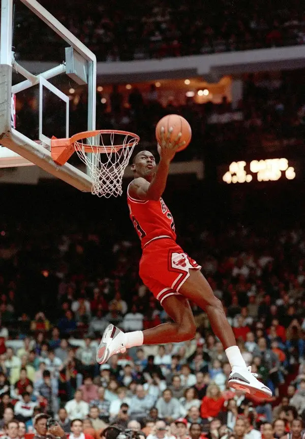

Biography
Michael Jeffrey Jordan (born February 17, 1963), also known by his initials MJ, is an American former professional basketball player and the principal owner of the Charlotte Hornets of the National Basketball Association (NBA).

Career
Michael Jordan played 15 seasons in the NBA, winning six championships with the Chicago Bulls. He is widely considered one of the greatest basketball players of all time.
Achievements
- 6× NBA champion (1991–1993, 1996–1998)
- 5× NBA Most Valuable Player (MVP)
- 14× NBA All-Star
- 10× All-NBA First Team
- Defensive Player of the Year (1988)